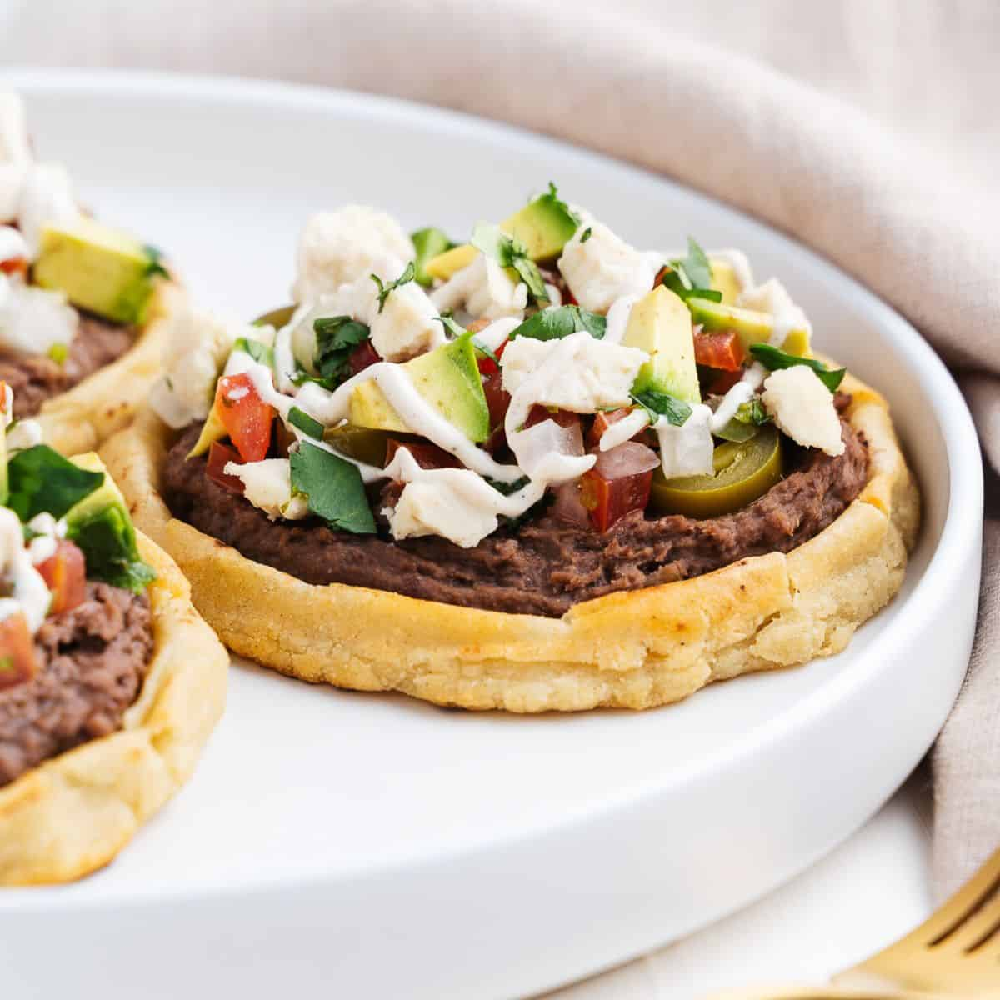

enchiladas

This delicious enchilada recipe made of ancho chiles, cheese and chicken will feed a whole village.
- 1 cup instant corn masa flour
- 1 cup water
- 4 dried california chiles, dried
- 2 ½ teaspoons salt, divided
- 1 clove garlic
- 4 medium tomatoes
- ½ teaspoon dried oregano
- ½ lb skirt steak, carne asada
- ½ teaspoon all-purpose meat seasoning
- 2 cups corn oil
- In a medium bowl, mix the masa flour and ½ cup (120 ml) of water together with your hands. Once combined, add the rest of the water and knead until the dough forms a smooth ball.
- Heat a large pan or griddle over medium-high heat.
- Pat the dough out into 6 flat circles.
- Fry the dough, turning frequently, until just lightly brown about 5 minutes.
- Once the dough is cooked, shape the sopes by pinching the sides up to form a wall around the edge. Set aside to cool.
- Rip the stems off the dried chiles and discard the seeds. Rinse the chiles, if necessary.
- Add the chiles to a small pot of water and bring to a boil over high heat. Once boiling, remove the pot from the heat.
- Transfer the chiles and their cooking liquid to a blender and add 1 teaspoon of salt and the garlic. Blend until smooth. Set aside.
- Add the tomatoes to a small pot of water and bring to a boil. Cook until the tomato skins split, then remove from the heat and drain, reserving ½ cup (120 ml) of the tomato water.
- Transfer the tomatoes to a blender with the reserved cooking liquid, oregano, and ½ teaspoon of salt. Blend until smooth. Set aside.
- Heat a large pan or griddle over medium-high heat. Add the skirt steak and season with the meat seasoning and remaining teaspoon of salt. Cook the meat, flipping frequently until seared and cooked through, about 10 minutes.
- Transfer the meat to a cutting board and cut into small pieces. Set aside.
- Heat the corn oil in a deep, large pan over high heat.
- Dip the sopes in the chile sauce, turning to coat completely.
- Once the oil is hot, fry the sopes, flipping frequently, until golden brown, about 5 minutes. Drain the sopes on paper towels or a wire rack.
- To serve, fill the sopes with refried beans, carne asada, shredded lettuce, tomato sauce, Mexican crema, and queso fresco.
- Enjoy!